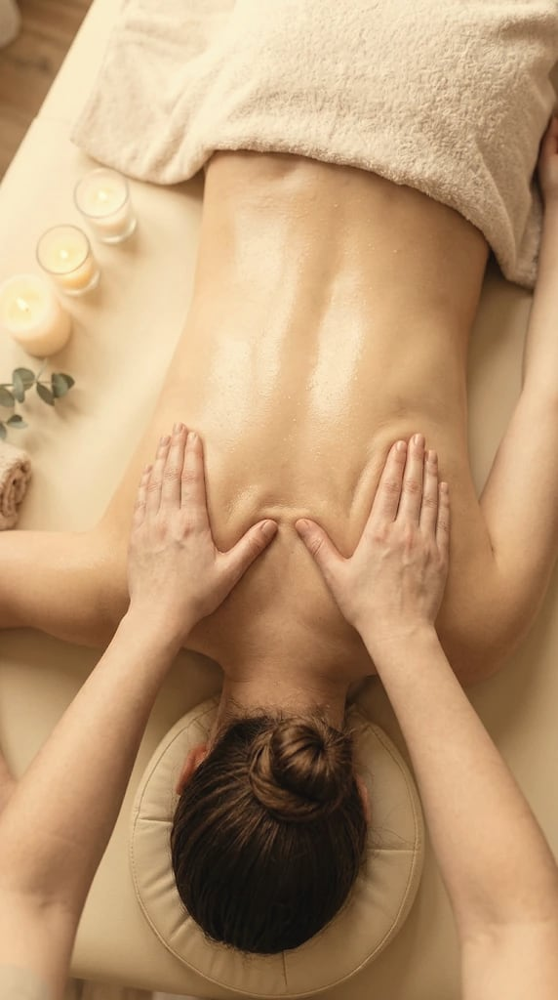
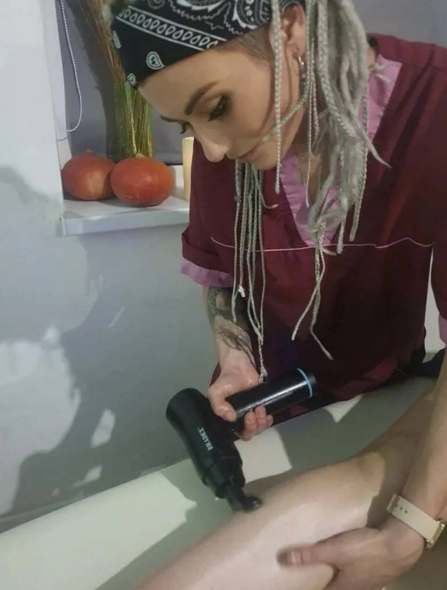

Массаж и кедровая бочка в Солнечном городе
Приходите с усталой спиной – уходите с лёгкостью в теле. Тихий кабинет, душ, халат и мастер с опытом больше 8 лет.
на Авито
без выходных

визит
Услуги и цены
Новым клиентам – скидка 10% на первый сеанс. Скажите о ней при записи.
Массаж
-
Классический массажвсё тело, проработка спины и шеи60 мин 4 000 ₽
-
Расслабляющий массажмягкий темп, чтобы снять стресс60 мин 3 500 ₽
-
Баночный массажвакуумные банки для спины и проблемных зон45 мин 4 000 ₽
-
Спортивный массажпосле тренировок, с перкуссионным массажёром60 мин уточняйте
-
Стоун-терапияпрогрев тела горячими камнями15 мин 1 100 ₽
Спа-уход
-
Кедровая бочкамини-сауна с паром на травах30 мин 1 000 ₽
-
Скрабированиемягкая кожа – лучше всего после бочки15 мин 800 ₽
-
Обёртывание30 мин 1 700 ₽
-
Лимфодренажное обёртываниедля лёгкости в теле30 мин 1 700 ₽
-
Термоодеялопрогрев, усиливает эффект обёртывания30 мин 600 ₽
-
Спа-процедуры для тела1 ч 5 000 ₽
-
Спа-процедуры1 ч 4 500 ₽
-
Спа-процедуры для лица45 мин 2 400 ₽
-
Спа-процедуры для рук15 мин 900 ₽
-
Спа-процедуры для ног15 мин 900 ₽
Можно взять сеанс на 2 часа – многие так и делают.

Привет, я Арина
С детства я понимаю людей через прикосновения: обнять, взять за руку – и уже понятно, как человек себя чувствует. Потом я работала тренером по растяжке и поняла, что больше всего хочу заниматься массажем.
На сеансе я сначала спрашиваю, что беспокоит и как вам комфортнее – сильнее или мягче. Работаю с женщинами и мужчинами.
- 2017
- Школа мастеров массажа, курс массажиста
- 2022
- Там же – курс релакс-массажа
- 8+ лет
- практики
Документы и образование проверены Авито.
Кабинет
Всё рядом: массажный стол, душ, чистые полотенца и халаты. Одноразовые простыни – для каждого гостя новые.
Как проходит сеанс
- Запись. Напишите или позвоните – подберём время с 10 до 21, в любой день.
- Встреча. Проспект Ветеранов, 169к6. Расскажу, как найти вход.
- Душ и халат. Можно принять душ до и после сеанса – всё есть на месте.
- Массаж. Сначала обсудим, что беспокоит, потом – час или два только для вас.
Когда массаж лучше отложить
Температура и простуда, острое воспаление, обострение хронических болезней, кожные высыпания в зоне массажа, тромбоз, онкология, беременность (без согласия врача). Если сомневаетесь – спросите меня при записи.
Что говорят гости
4,8 из 5 – 40 отзывов на Авито
Записаться
Напишите, какой массаж хотите и когда удобно, – отвечу и подберу время. Первый визит со скидкой 10%.
- Адрес
- Санкт-Петербург, проспект Ветеранов, 169к6
ЖК «Солнечный город», Красносельский район - Часы
- Каждый день, 10:00–21:00
- Телефон
- +7 (000) 000-00-00